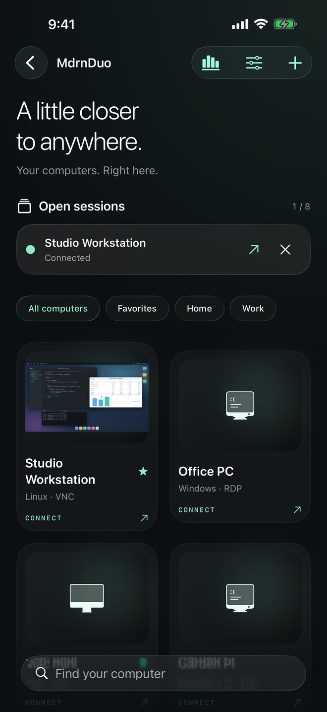
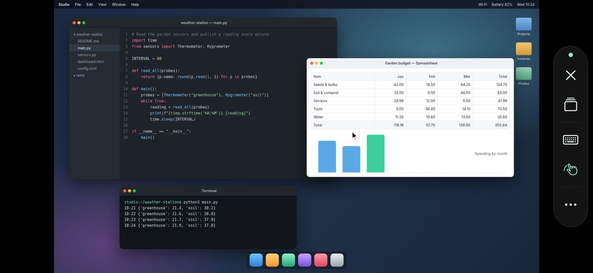
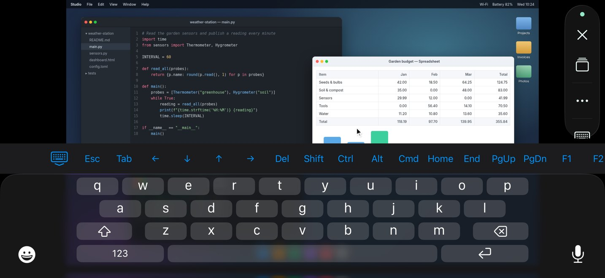
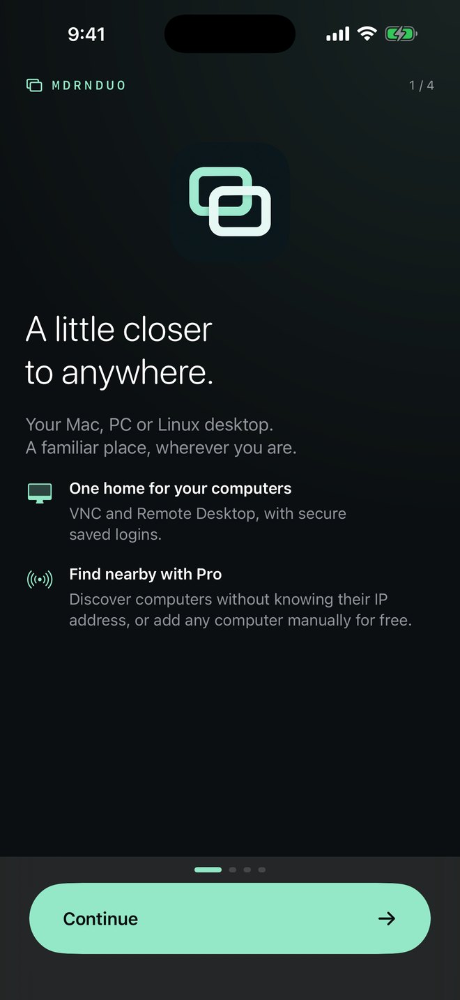
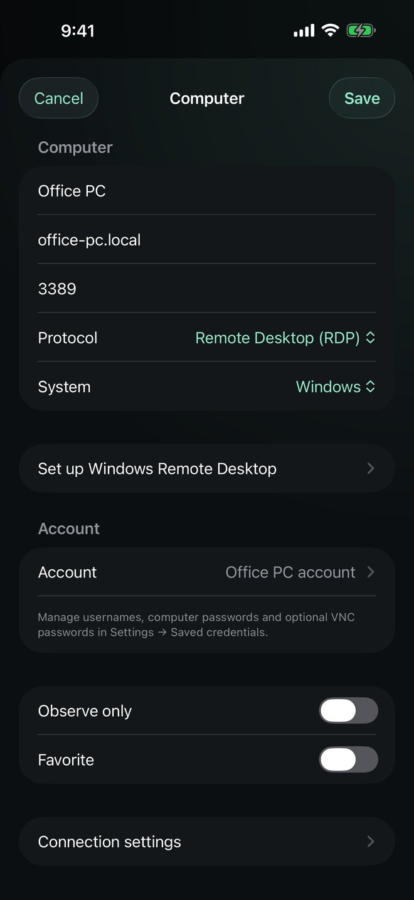
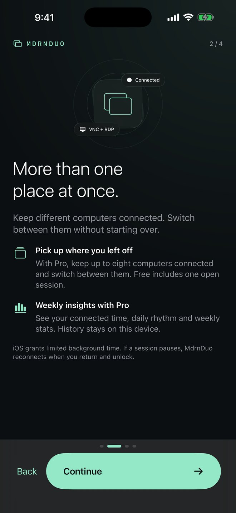
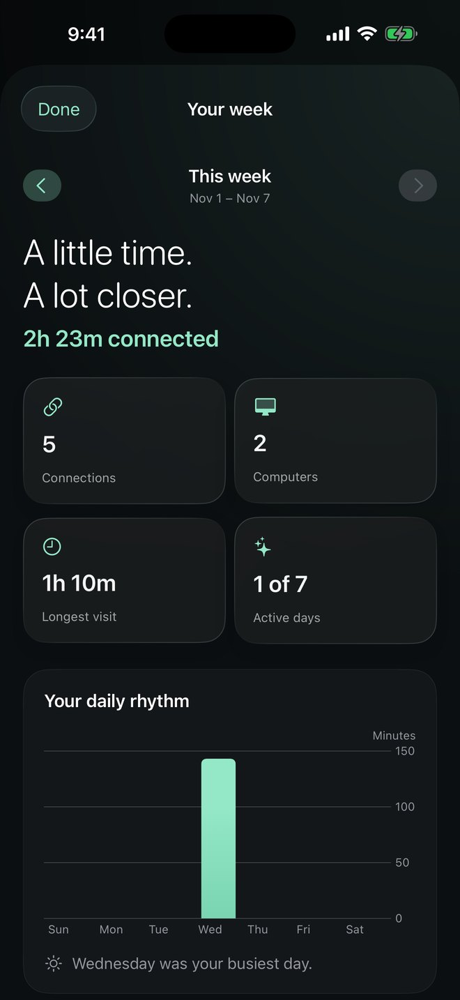

VNC and Remote Desktop
Connect to Mac Screen Sharing, VNC servers on Windows, Linux and Raspberry Pi, and Windows Remote Desktop (RDP) hosts.
VNC & Remote Desktop for iPhone
MdrnDuo connects your iPhone to Macs, Windows PCs, Linux machines and Raspberry Pi over VNC and Remote Desktop, with a touch-first control rail and a full desktop key row.

iPhone, iOS 17 or laterVNC · RDPNo accountNo ads or tracking
The session
Turn your iPhone sideways and work. Switch between direct touch and trackpad pointer, right-click, scroll and drag, and bring up Esc, Tab, arrows, Ctrl, Alt, Cmd and function keys when an app needs them. The control rail tucks away so the desktop gets the screen.

Keyboard, pointer mode, sessions and disconnect, a thumb away.

The keys a phone keyboard leaves out, ready above it.
What it does
Save the computers you use, keep their passwords in the iPhone Keychain, and open the one you need with a tap.
Connect to Mac Screen Sharing, VNC servers on Windows, Linux and Raspberry Pi, and Windows Remote Desktop (RDP) hosts.
Passwords and keys live in the device Keychain. They are never synced, exported or sent to us.
Optionally require Face ID or your passcode before your saved computers appear.
Group computers, star the ones you use most and edit each connection’s quality, input and clipboard settings.
Remote Desktop connections can be pinned to a verified certificate fingerprint so a changed server is caught, not trusted.
Export and import your connection list as JSON, or import computers from a CSV file. Secrets are never included.
A closer look
A short welcome tour, a clear connection editor, several sessions side by side with Pro, and a weekly view of the time you spend connected.




Free & Pro
MdrnDuo Free includes single-session VNC and RDP, three saved computers, manual hostname or IP entry, trackpad and keyboard controls, and secure credential storage. There is no sign-in and no paywall at launch.
U.S. prices. The App Store shows the price for your country before you buy. Subscriptions renew automatically until canceled in your Apple Account settings. See the Terms.
| Feature | Free | Pro |
|---|---|---|
| Saved computers | 3 | Unlimited |
| Open sessions at once | 1 | Up to 8 |
| Nearby discovery (Bonjour and local scan) | — | Included |
| iCloud connection sync (no passwords) | — | Included |
| Weekly usage insights | — | Included |
Good to know
MdrnDuo is a client. The computer you connect to must already allow screen sharing, and your iPhone must be able to reach it.